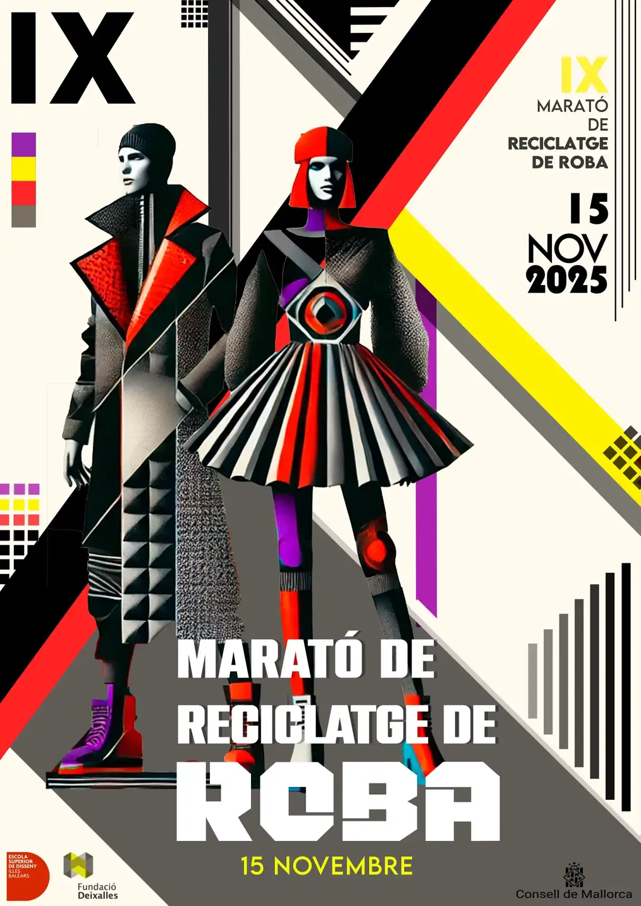

Diseño gráfico / 2024
Recogida de ropa 2024
Panel informativo y promocional para la IX Marató de Reciclatge de Roba, organizada por la Fundació Deixalles en colaboración con la ESDIB y el Consell de Mallorca.


Diseño gráfico / 2024
Panel informativo y promocional para la IX Marató de Reciclatge de Roba, organizada por la Fundació Deixalles en colaboración con la ESDIB y el Consell de Mallorca.
